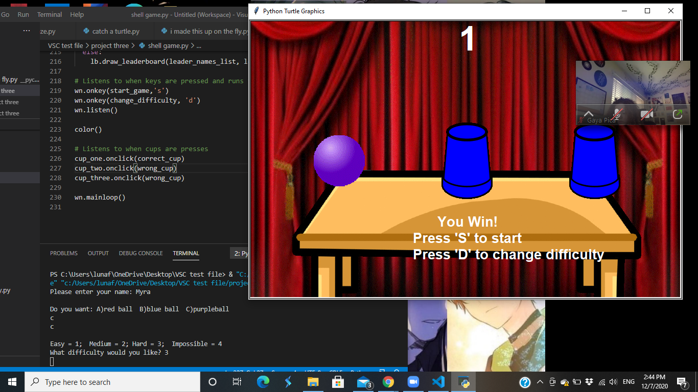
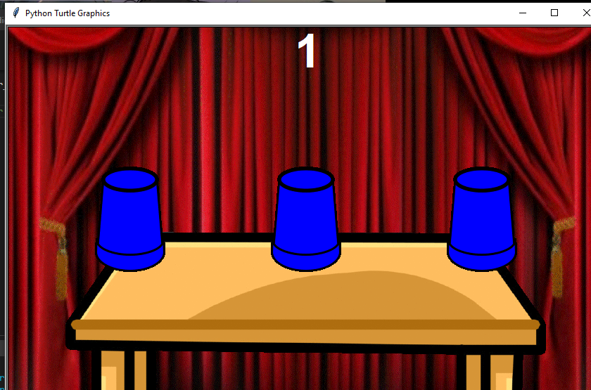
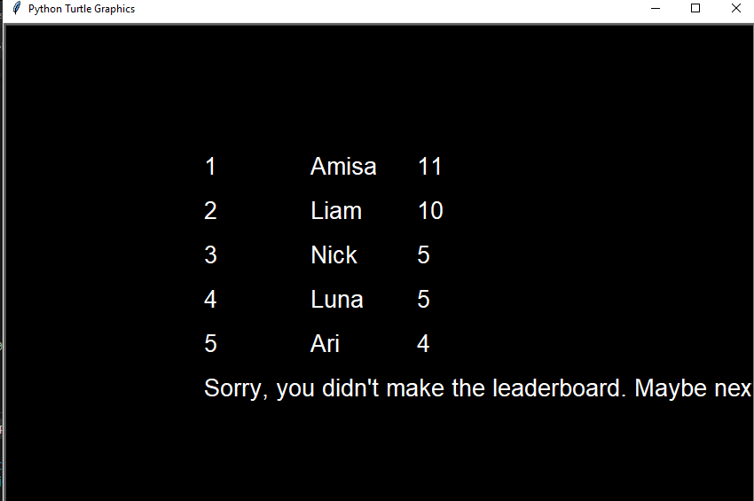

Luna's Portfolio Page!
This is my first project called Dawn to Dusk


My group and I coded a python that represented the cycle of dawn to dusk or in other words day and night.
Our program had a scenery as shown above and the sun would move across the sky and once it reaches the edge,
the sky becomes night and the moon appears replacing the sun. This would move across the screen once again
and returns to a sun. This cycle repeats in an infinite loop to represent how a new day will always come.
In this project I was responsible for the creation of the codes for the background sky and house while also
managing the speed of the motion in which the sun and moon moves and also the placement of where the sun and
moon will appear each time the cycle repeats itself. When we faced problems during coding I was responsible for
going over the codes and finding the problem and notifying the group so that we could find the solution together.
This is my second project "I Made this up on the Fly"
Our group created a game where we click the fly and it turns into a troll face to indicate that it was squished.
Once the fly is squished, two random numbers from 0 to 100(num1 and num2)are chosen and an equation of num1 + num2
is formed and if we answer this equation correctly, a point is added to the score count and if it is incorrect, it
doesn't show up on the score board but keeps track of how many the player missed. Continue this until the time limit
of 30 seconds runs out. At the end, it shows you the score of how many questions the player got correct out of the
total amount of questions the player got.
My third project is the "Cup Game"
  